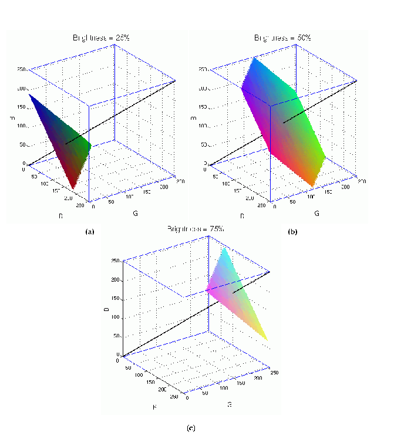
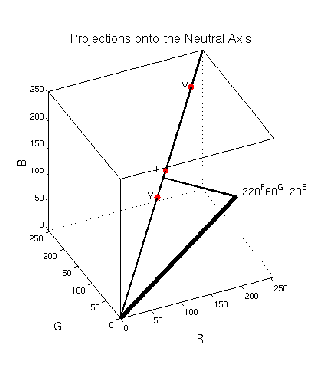
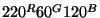
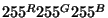
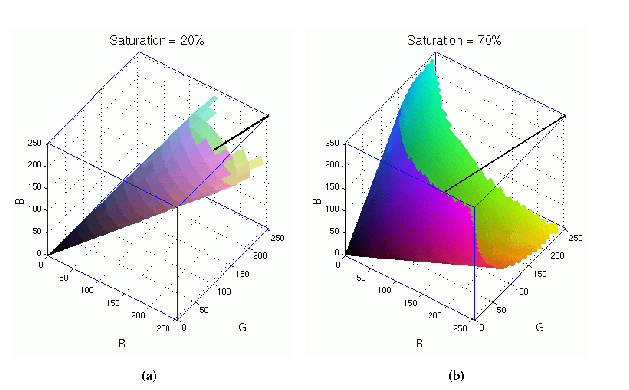
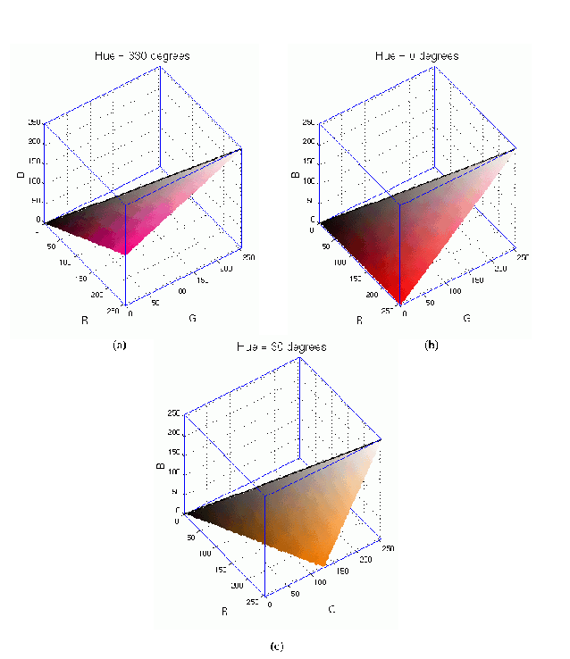
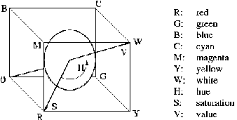

Next: 10.4
Исключающие цветовые схемы Up: 10.
Цветовые схемы и Previous: 10.2
Цветовая схема HSV
Next: 10.4
Исключающие цветовые схемы Up: 10.
Цветовые схемы и Previous: 10.2
Цветовая схема HSV
10.3 Связь HSV и RGB
Лучше понять цветовые схемы RGB и HSV нам поможет исследование связи между
ними. Рассмотрим как выглядят внутри RGB-куба множества цветов с одинаковыми
значениями тона, насыщенности или яркости.
Сначала точнее определим понятие яркости. В предыдущем разделе мы говорили о
яркости как о мере визуально воспринимаемого количества света, излучаемого
окрашенной областью. Используя лампу с регулятором накала, можно менять уровень
яркости. Отметим, что уровень яркости не зависит от окраски светового луча. С
одинаковым успехом можно обсуждать яркости как красного, так и белого цветов.
Цветной монитор это просто объединение тысяч маленьких ламп, излучающих
красный, зеленый и синий свет. Так как каждая лампа управляется независимо,
яркость каждой точки экрана является суммой яркостей получаемых от каждой
цветной лампы, освещающей эту точку. Таким образом, если суммы величин цветовых
компонент RGB-цветов равны, будем говорить, что эти цвета имеют одинаковый
уровень яркости. В схеме RGB цвета с одинаковым уровнем яркости располагаются на
одной плоскости, перпендикулярной нейтральной оси (R + G + B = constant). На
рисунке 10.5
Figure: Плоскости цветов с одинаковой
яркостью в кубе RGB
 |
приведены примеры трех плоскостей, перпендикулярных нейтральной оси куба RGB.
Плоскость на рисунке 10.5
(a) темнее, плоскость на рисунке 10.5
(с) - светлее, а на рисунке 10.5
(b) - плоскость средней яркости. Отметим, что на каждой плоскости собраны
одинаково яркие цвета. На рисунке отображены цвета с уровнями яркости 25%, 50% и
75%. Чистый белый и чистый черный цвета имеют яркость, соответственно, 100% и
0%. Каждый из них представлен единственной точкой куба.
Есть много концепций, тесно связанных с яркостью, и они обладают рядом
полезных качеств. Яркость формально определяется по формуле (R+G+B)/3;
это физическая характеристика, и она не соответствует человеческому восприятию
цвета. Поэтому яркость в обычном виде не используется в GIMP. Вместо этого
используются
- Светимость (lightness), L=[max(R,G,B) + min(R,G,B)]/2,
- Величина (value), V=max(R,G,B),
- Свечение (luminance), Y=0.3 R + 0.59 G + 0.11 B.
Свечение это представление яркости, лучше всего соответствующее человеческому
восприятию, поскольку коэффициенты 0.3, 0.59 и 0.11 наиболее точно отвечают
чувствительности глаз к красному, зеленому и синему цветам.
На рисунке 10.6
Figure: Различные проекции на
нейтральную ось.
 |
представлены проекции различных представлений яркости на нейтральную ось.
Показаны положение в кубе RGB выбранного цвета,

, и позиции на нейтральной оси, соответствующие его
величине,
V, светимости,
L, и свечению,
Y. По рисунку
понятно, что
величина ярче всех. Свечение и светимость переменны и одно
может быть ярче другого в зависимости от выбранного триплета RGB.
Далее определим насыщенность. Определение насыщенности соотносится с
определением яркости. Насыщенность это полнота цвета участка рисунка
относительно его яркости. Что такое полнота цвета? Ответ можно дать в контексте
понятий куба RGB и нейтральной оси. Как уже было отмечено, нейтральная ось это
диагональ, соединяющая точки куба  и
и

, которая состоит
из белой, черной и представляющих различные градации серого точек. Как принято
считать, эта ось не имеет цвета (то есть тона). Полнота цвета каждой точки в
кубе RGB пропорциональна длине перпендикуляра, опущенного из этой точки на
нейтральную ось. Точки, расположенные ближе к нейтральной оси, меньше наполнены
цветом (ближе к серому цвету), более удаленные точки содержат больше цвета.
Итак, насыщенность цвета в кубе RGB это отношение полноты цвета к его яркости.
Таким образом, множество точек куба RGB, соответствующих цветам с одинаковой
насыщенностью, это конус с вершиной в точке , центральной осью
которого является нейтральная ось.
На рисунке 10.7
Figure: Конусы постоянной насыщенности
в кубе RGB
 |
изображены два куба RGB. В кубе на рисунке 10.7
(a) показан конус цветов с насыщенностью 20%, а на рисунке 10.7
(b) - с насыщенностью 70%. Отметим, что правый конус выглядим более ярким,
потому что его цвета более насыщенны. Левый конус более тусклый, так как его
цвета ближе к нейтральным. Близкие к нейтральным цвета мы называем пастельными.
И наконец, определение тона. Тон это то, что мы в обычной речи и называем
цветом. Тон точки куба RGB определяется углом поворота вокруг нейтральной оси
плоскости, содержащей эту точку и нейтральную ось. Взглянув на вершины куба RGB
на рисунке 10.2,
мы можем заметить, что красный, желтый, зеленый, циановый, синий и фиолетовый
цвета равномерно распределяются по углам вокруг нейтральной оси. Таким образом,
клин, определяемый нейтральной осью и любой точкой на поверхности куба
определяет плоскую поверхность, объединяющую точки, соответствующие всем цветам
с одинаковым тоном.
Рисунок 10.8
Figure: Поверхности цветов одинакового
тона
 |
изображает три куба RGB с заключенными в них поверхностями цветов одинакового
тона. Поскольку тон это функция угла, его значения изменяются от 0 до 360
градусов. Положим тон точки расположенной в ``красной'' вершине куба равным 0.
Он же, в нашем определении будет соответствовать и тону 360. Этот тон показан на
рисунке 10.8
(b). Куб на рисунке 10.8
(a) показывает тон равный 330, соответствующий пурпурному цвету, а куб на
рисунке 10.8
(c) - тон 30, соответствующий оранжевому. Отметим, что хотя тон на каждой из
приведенных поверхностей постоянен, яркость и насыщенность принимают все
возможные для данного тона значения.
Рисунок 10.9
Figure: Координаты HSV внутри куба
RGB
 |
подводит черту под нашим обсуждением отношений между цветовыми схемами RGB и
HSV. Правда нейтральная ось соответствует значениям яркости, а не величины, и я
часто буду злоупотреблять этим понятием, говоря о нейтральной оси как об оси
величин. Модель на pисунке 10.9
очень пригодится при объяснении режимов смешивания цветов, которые я опишу
позже.
С позиции системы координат HSV можно сделать несколько интересных
наблюдений, касающихся цветовых областей куба RGB. Во первых, то, что циановая,
фиолетовая и желтая вершины куба представляют более яркие цвета, чем красная,
зеленая и синяя, поскольку их проекции на нейтральную ось расположены дальше от
начала координат. Также все точки пирамиды, определенной вершинами C, M, Y и W
соответствуют светлым цветам, в то время как точки пирамиды определенной
вершинами R, G, B и началом координат соответствуют более темным цветам. Цвета
расположенные рядом с нейтральной осью будут более пастельными и размытыми,
поскольку обладают меньшей насыщенностью, а цвета удаленные от этой оси будут
выглядеть яркими.
Next: 10.4
Исключающие цветовые схемы Up: 10.
Цветовые схемы и Previous: 10.2
Цветовая схема HSV
Grigory Bakunov 2003-05-26